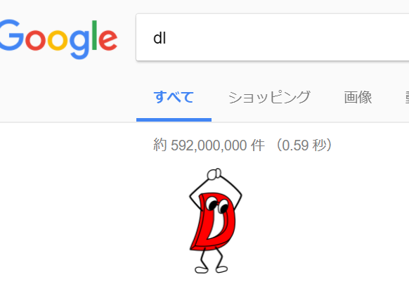

Ark's page

- Blog: Ark's Blog
- GitHub: ArkArk
- Twitter: @arkark_
現在、大幅改装計画中です。このページは仮のものとなっています。
About Me
- 名前: Ark (アーク)
- 所属: 東京工業大学 理学部 情報科学科
- サークル: デジタル創作同好会 traP
- 言語:
- よく使う: D
- それなりに使える: Java, Kotlin, Processing
- まあまあ: C, C++, JavaScript, Scala
- 少し使える: Haskell, Prolog, Python
- ほんの少し: Ruby, PHP, CoffeeScript
- その他: Brainfuck
- AtCoder: ark012345
- Shadertoy: Ark
-

ゲーム制作、競プロ、Shaderなどを趣味でやっています。最近CTF始めました。グラフ、代数、圏論、論理学、アルゴリズム、データ構造などにも興味あります。


Works


Articles
-
lsを間違えてdlと検索してしまったときに、D言語くんが通り過ぎるスクリプト

D言語くん Advent Calendar 2017の14日目を担当しました。
Article 2017/12/14
-
今すぐBrainf*ckを始めるべき10の理由
Esolang(難解プログラミング言語) Advent Calendar 2016の4日目を担当しました。（ネタ記事です）
Article 2016/12/4